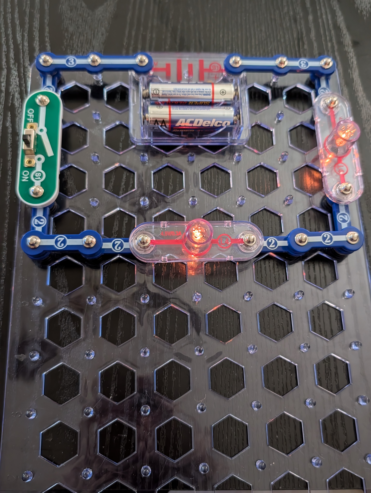
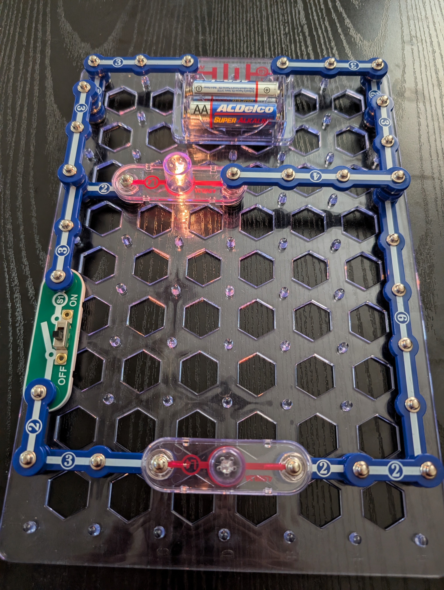
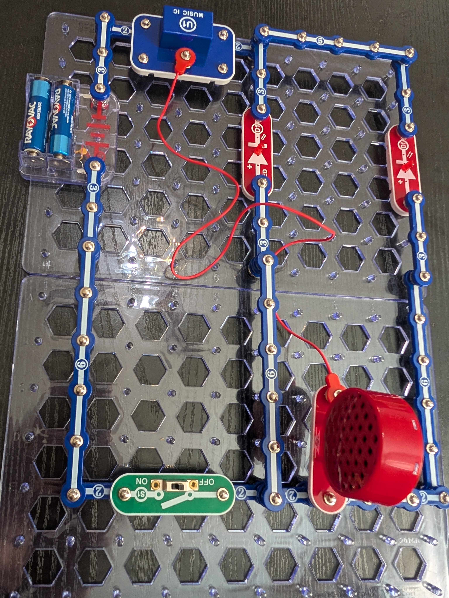
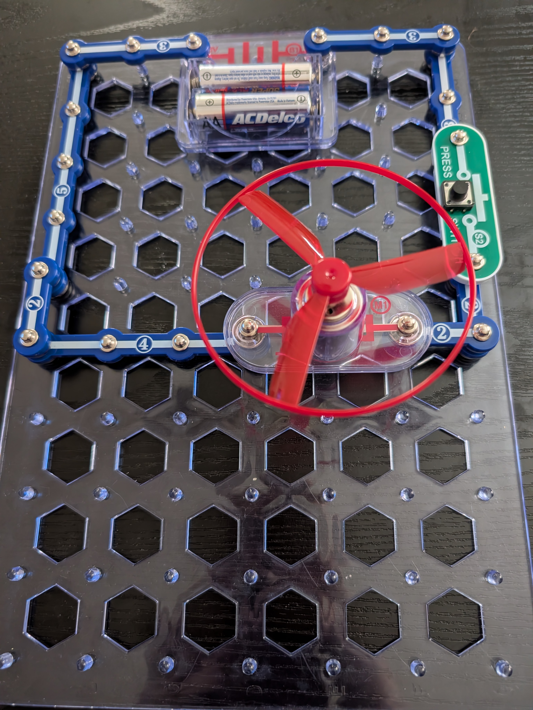
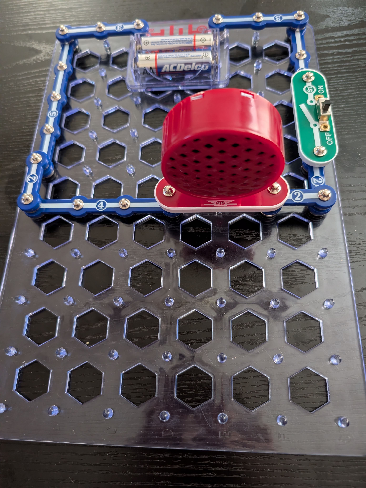
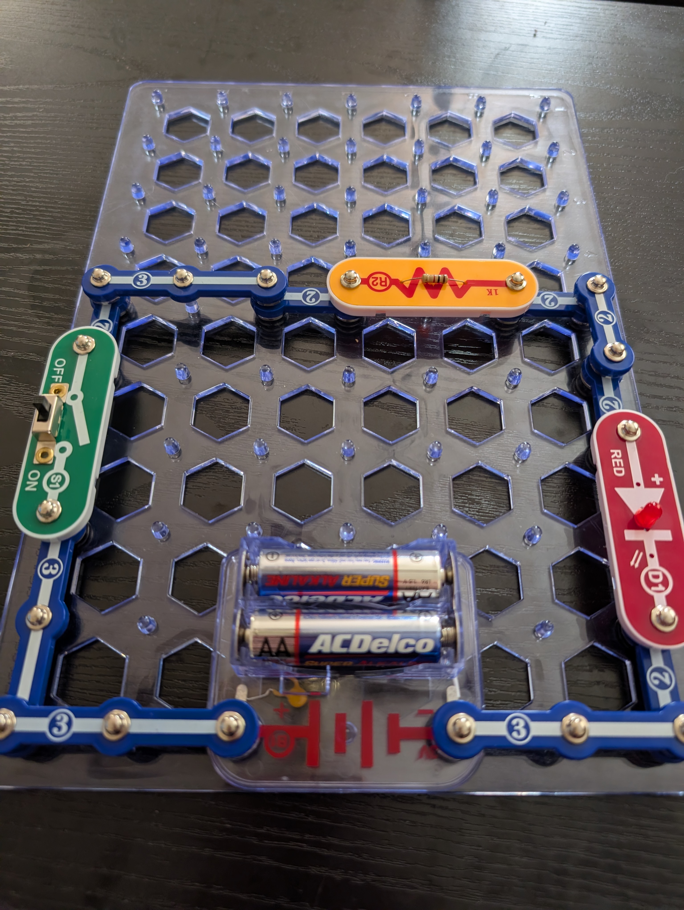

What This Stage Was About
After exploring circuits digitally, my student transitioned into building real circuits using Snap Circuits. This stage helped him connect the ideas he learned in PhET to physical components — wires, switches, motors, LEDs, and batteries.
Snap Circuits provided a structured, safe way to build without worrying about loose wires or incorrect polarity. He could focus on understanding how components interact, why circuits fail, and how to troubleshoot. This hands‑on experience made the abstract ideas from earlier stages feel concrete and meaningful.
He continued using the digital notebook to take photos, label diagrams, and record what worked and what needed fixing.
Lesson Plan
Digital Tools We Used
Snap Circuits PICRAT: Creative–Replacement
Digital Notebook PICRAT: Passive–Replacement
Student Artifacts
.jpg)









What We Did
- built circuits with switches, motors, and LEDs
- tested how components interact
- compared results to PhET predictions
- practiced troubleshooting
My Reflection
The Snap Circuits lessons helped my student move from understanding circuits in a simulation to working with real components. He stayed persistent as he tested different pathways, corrected wiring mistakes, and figured out why certain designs didn’t work, especially in parallel circuits. Each time he solved a problem, his confidence grew.
I am still new to circuits and Snap Circuits myself, so there were moments when I had to slow down and work through the issues alongside him. This lesson helped me better understand how to support a student when both of us are learning the content together. Even with that learning curve, the hands‑on work supported the goals of the unit and prepared him well for the Micro:bit activities that follow.
Student Reflection
“During the Snap Circuits lessons, I built a big parallel circuit that stretched across two grids. It had two LEDs, a speaker, a switch, a music player, and a battery. As I worked on it, I learned that you can’t make a pathway from the bottom of a parallel circuit and wrap it around to the top. It has to stay inside the real branches or the electrons won’t flow the right way.
My first design didn’t work the way I expected. The electrons only went to the lights, so nothing else turned on. I had to move the switch, reconnect the pieces, and change a few parts to make the whole circuit work. I also had to reroute wires, replace the motor with a switch, and add a sound piece so the speaker would work.
Some parts were confusing, especially when I tried to combine circuits and the electricity didn’t go where I wanted it to. I also noticed that the motor acts differently depending on which direction the electricity flows, which made me wonder why that happens. After all the lessons, I feel very confident about building more complicated circuits.”
ISTE Standards Addressed
1.1 Empowered Learner
The student applied what they learned from the simulation to real hardware, choosing which circuits to build, testing ideas, and using hands‑on exploration to deepen their understanding of how electricity behaves in physical systems.
1.4 Innovative Designer
The student used the Snap Circuits components to design, build, and modify real circuits—iterating, troubleshooting, and solving problems such as incorrect connections, reversed polarity, or incomplete paths.
1.5 Computational Thinker
The student broke down circuit problems into smaller parts, identified where the system failed, and used logical reasoning to test hypotheses about why a motor, light, or buzzer did or did not work.
1.6 Creative Communicator
The student documented their builds with photos, diagrams, and written explanations, clearly communicating how each circuit was constructed and why it behaved the way it did.